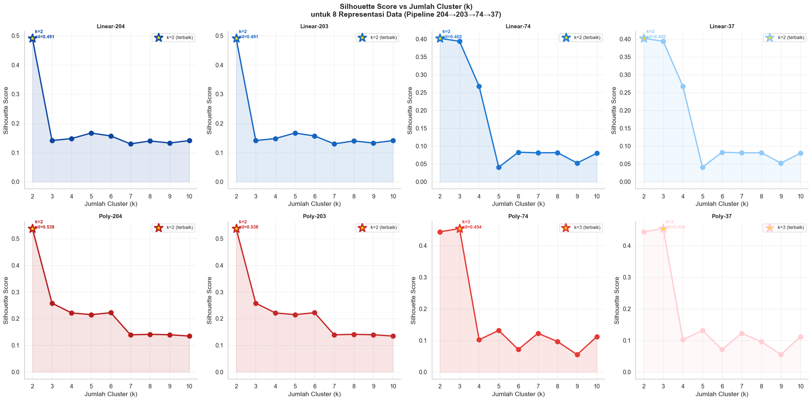
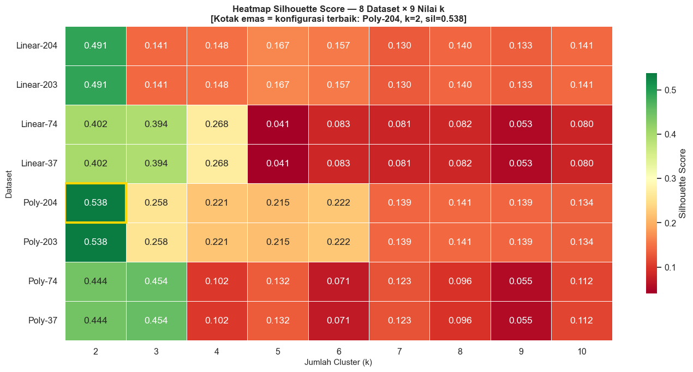
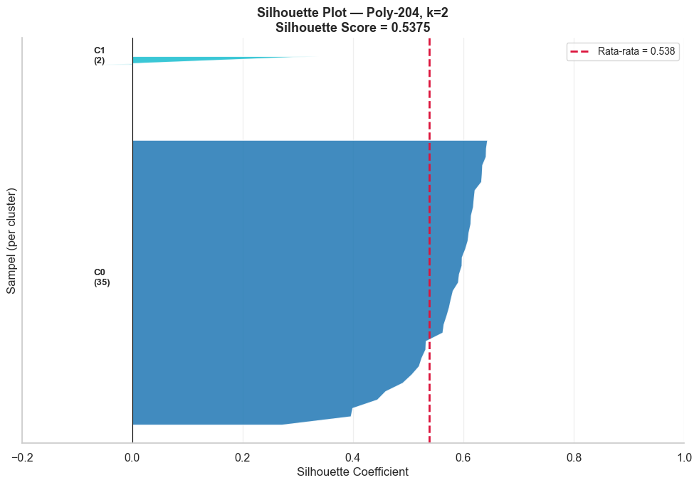
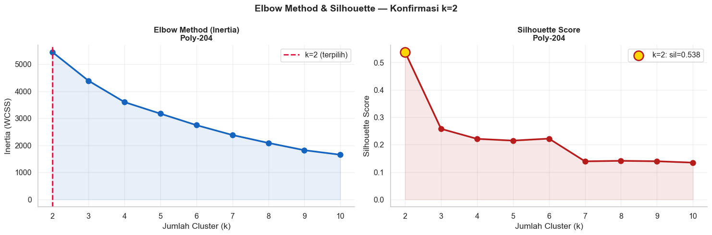
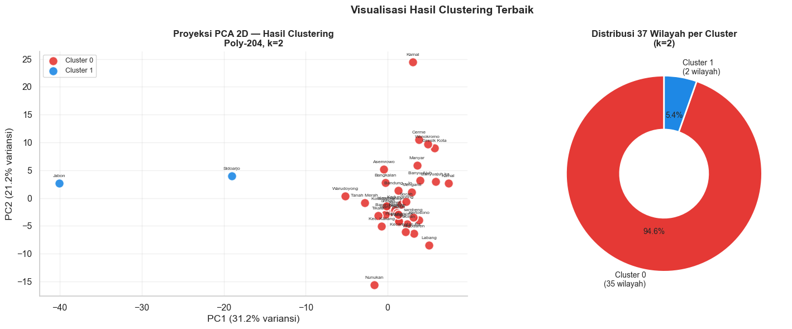
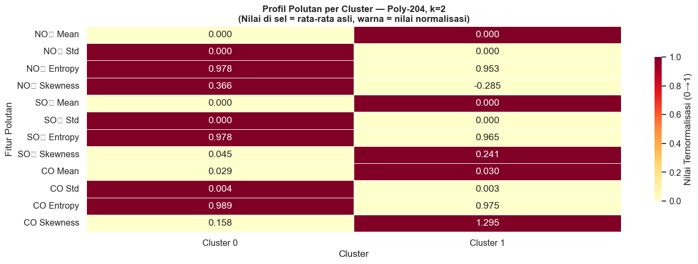

Tahap 3 — Eksperimen Clustering & Analisis Silhouette#
Tahap ini adalah inti dari analisis: menjalankan K-Means clustering pada semua representasi data (8 variasi dari pipeline 204→203→74→37), mengevaluasi setiap kombinasi dengan Silhouette Coefficient, lalu memilih konfigurasi terbaik.
Konsep Utama#
K-Means Clustering#
K-Means mengelompokkan \(n\) titik data ke dalam \(k\) cluster dengan meminimalkan Within-Cluster Sum of Squares (WCSS):
di mana \(\mu_j\) adalah centroid cluster \(C_j\).
Algoritma:
Inisialisasi \(k\) centroid (metode
k-means++untuk inisialisasi lebih cerdas)Tetapkan tiap titik ke centroid terdekat
Perbarui centroid sebagai rata-rata cluster
Ulangi 2–3 hingga konvergen
Silhouette Coefficient#
Untuk setiap titik data \(i\):
\(a(i)\) = jarak rata-rata ke semua titik dalam clusternya sendiri (intra-cluster cohesion)
\(b(i)\) = jarak rata-rata ke semua titik di cluster terdekat (inter-cluster separation)
Nilai |
Interpretasi |
|---|---|
dekat +1 |
Titik berada jauh dari cluster lain → cluster sangat baik |
dekat 0 |
Titik berada di perbatasan dua cluster |
dekat −1 |
Titik mungkin salah diklasifikasi |
Elbow Method#
Grafik Inertia vs k — mencari titik ‘siku’ di mana penambahan cluster tidak lagi menurunkan inertia secara signifikan. Digunakan bersama Silhouette untuk konfirmasi.
Desain Eksperimen#
Parameter |
Nilai |
|---|---|
Dataset |
8 (Linear & Poly × 204, 203, 74, 37 dimensi) |
Nilai k |
2, 3, 4, 5, 6, 7, 8, 9, 10 |
Total run |
72 kombinasi |
Algoritma |
K-Means ( |
Metrik |
Silhouette Score + Inertia |
3.1 Import & Load Data Tahap 2#
import warnings
warnings.filterwarnings('ignore')
import pickle, os
import numpy as np
import pandas as pd
import matplotlib.pyplot as plt
import matplotlib.cm as cm
import seaborn as sns
from sklearn.cluster import KMeans
from sklearn.metrics import silhouette_score, silhouette_samples
OUTPUT_DIR = '../output'
plt.rcParams['figure.figsize'] = (13, 5)
sns.set_theme(style='whitegrid', font_scale=1.05)
# ── Load data dari Tahap 2 ───────────────────────────────────
with open(f'{OUTPUT_DIR}/tahap2_pca.pkl', 'rb') as f:
d = pickle.load(f)
representasi = d['representasi']
meta_linear = d['meta_linear']
meta_poly = d['meta_poly']
X_linear = d['X_linear']
X_poly = d['X_poly']
print('Data berhasil dimuat.')
print(f'Total representasi : {len(representasi)}')
print('\nRepresentasi yang tersedia:')
for nama, X in representasi.items():
print(f' {nama:<15} → shape: {X.shape}')
Data berhasil dimuat.
Total representasi : 8
Representasi yang tersedia:
Linear-204 → shape: (37, 204)
Linear-203 → shape: (37, 203)
Linear-74 → shape: (37, 74)
Linear-37 → shape: (37, 37)
Poly-204 → shape: (37, 204)
Poly-203 → shape: (37, 203)
Poly-74 → shape: (37, 74)
Poly-37 → shape: (37, 37)
3.2 Jalankan 72 Eksperimen Clustering#
Kita menguji semua kombinasi: 8 representasi × 9 nilai k = 72 eksperimen.
# ── Parameter eksperimen ─────────────────────────────────────
K_RANGE = range(2, 11) # k dari 2 sampai 10
N_INIT = 20 # Lebih banyak inisialisasi → lebih stabil
RANDOM_STATE = 42
hasil = [] # Kumpulkan semua hasil
labels_map = {} # Simpan label untuk setiap (dataset, k)
total = len(representasi) * len(K_RANGE)
run = 0
print(f'Menjalankan {total} eksperimen...')
print('=' * 65)
for nama_data, X in representasi.items():
best_sil, best_k = -1, 2
for k in K_RANGE:
run += 1
km = KMeans(n_clusters=k, n_init=N_INIT,
init='k-means++', random_state=RANDOM_STATE)
labels = km.fit_predict(X)
sil = silhouette_score(X, labels)
iner = km.inertia_
labels_map[(nama_data, k)] = labels
hasil.append({
'dataset' : nama_data,
'k' : k,
'silhouette': round(sil, 6),
'inertia' : round(iner, 4),
})
if sil > best_sil:
best_sil, best_k = sil, k
print(f' {nama_data:<15} k_terbaik = {best_k} silhouette = {best_sil:.4f}')
df_hasil = pd.DataFrame(hasil)
print(f'\nSelesai! Total {run} eksperimen dijalankan.')
Menjalankan 72 eksperimen...
=================================================================
Linear-204 k_terbaik = 2 silhouette = 0.4909
Linear-203 k_terbaik = 2 silhouette = 0.4909
Linear-74 k_terbaik = 2 silhouette = 0.4021
Linear-37 k_terbaik = 2 silhouette = 0.4021
Poly-204 k_terbaik = 2 silhouette = 0.5375
Poly-203 k_terbaik = 2 silhouette = 0.5375
Poly-74 k_terbaik = 3 silhouette = 0.4543
Poly-37 k_terbaik = 3 silhouette = 0.4543
Selesai! Total 72 eksperimen dijalankan.
3.3 Visualisasi Silhouette Score vs k (semua dataset)#
Tiap subplot menampilkan kurva Silhouette untuk satu representasi data. Titik bintang emas menandai nilai k terbaik.
# ── Warna per dataset ─────────────────────────────────────────
PALETTE = {
'Linear-204': '#0D47A1', 'Linear-203': '#1565C0',
'Linear-74' : '#1976D2', 'Linear-37' : '#90CAF9',
'Poly-204' : '#B71C1C', 'Poly-203' : '#C62828',
'Poly-74' : '#E53935', 'Poly-37' : '#FFCDD2',
}
fig, axes = plt.subplots(2, 4, figsize=(22, 11))
axes = axes.flatten()
for idx, nama_data in enumerate(representasi):
sub = df_hasil[df_hasil['dataset'] == nama_data]
color = PALETTE.get(nama_data, '#555555')
ax = axes[idx]
ax.plot(sub['k'], sub['silhouette'], 'o-', color=color,
linewidth=2.5, markersize=9, zorder=3)
ax.fill_between(sub['k'], sub['silhouette'], alpha=0.12, color=color)
# Tandai titik terbaik
best = sub.loc[sub['silhouette'].idxmax()]
ax.scatter(best['k'], best['silhouette'], s=280,
color='gold', edgecolors=color, linewidth=2.5,
zorder=5, marker='*', label=f'k={int(best["k"])} (terbaik)')
ax.annotate(f" k={int(best['k'])}\n sil={best['silhouette']:.3f}",
xy=(best['k'], best['silhouette']), fontsize=9,
fontweight='bold', color=color)
ax.set_title(f'{nama_data}', fontweight='bold', fontsize=11)
ax.set_xlabel('Jumlah Cluster (k)')
ax.set_ylabel('Silhouette Score')
ax.set_xticks(list(K_RANGE))
ax.legend(fontsize=9)
ax.spines[['top', 'right']].set_visible(False)
ax.grid(True, alpha=0.3)
plt.suptitle('Silhouette Score vs Jumlah Cluster (k)\nuntuk 8 Representasi Data (Pipeline 204→203→74→37)',
fontsize=14, fontweight='bold')
plt.tight_layout()
plt.savefig(f'{OUTPUT_DIR}/07_silhouette_semua.png', dpi=150, bbox_inches='tight')
plt.show()
print('Gambar disimpan: output/07_silhouette_semua.png')

Gambar disimpan: output/07_silhouette_semua.png
3.4 Tabel Perbandingan & Pemilihan Konfigurasi Terbaik#
# ── Tabel ringkasan best k per dataset ───────────────────────
ringkasan = (
df_hasil.groupby('dataset', sort=False)
.apply(lambda g: g.loc[g['silhouette'].idxmax()])
.reset_index(drop=True)
[['dataset', 'k', 'silhouette', 'inertia']]
.sort_values('silhouette', ascending=False)
.reset_index(drop=True)
)
ringkasan.index += 1
ringkasan.columns = ['Dataset', 'k Terbaik', 'Silhouette', 'Inertia']
print('PERBANDINGAN KONFIGURASI TERBAIK TIAP DATASET:')
print('=' * 65)
print(ringkasan.to_string())
ringkasan.to_csv(f'{OUTPUT_DIR}/ringkasan_eksperimen.csv')
# ── Pilih GLOBAL TERBAIK ──────────────────────────────────────
best_row = df_hasil.loc[df_hasil['silhouette'].idxmax()]
BEST_DATASET = best_row['dataset']
BEST_K = int(best_row['k'])
BEST_SIL = best_row['silhouette']
BEST_LABELS = labels_map[(BEST_DATASET, BEST_K)]
print(f'\n>> KONFIGURASI TERBAIK GLOBAL:')
print(f' Dataset : {BEST_DATASET}')
print(f' k (cluster): {BEST_K}')
print(f' Silhouette : {BEST_SIL:.4f}')
PERBANDINGAN KONFIGURASI TERBAIK TIAP DATASET:
=================================================================
Dataset k Terbaik Silhouette Inertia
1 Poly-203 2 0.537546 5450.8166
2 Poly-204 2 0.537546 5450.8166
3 Linear-204 2 0.490860 5442.2698
4 Linear-203 2 0.490860 5442.2698
5 Poly-74 3 0.454321 1968.6162
6 Poly-37 3 0.454321 1968.6162
7 Linear-37 2 0.402139 2226.9717
8 Linear-74 2 0.402139 2226.9717
>> KONFIGURASI TERBAIK GLOBAL:
Dataset : Poly-204
k (cluster): 2
Silhouette : 0.5375
3.5 Heatmap Perbandingan Silhouette — Semua Dimensi#
Heatmap ini merangkum seluruh 72 eksperimen dalam satu visualisasi. Baris = dataset, Kolom = k.
# ── Heatmap Silhouette Score ──────────────────────────────────
pivot = df_hasil.pivot(index='dataset', columns='k', values='silhouette')
# Urutkan baris sesuai urutan pipeline
urutan = ['Linear-204', 'Linear-203', 'Linear-74', 'Linear-37',
'Poly-204', 'Poly-203', 'Poly-74', 'Poly-37']
pivot = pivot.reindex([u for u in urutan if u in pivot.index])
fig, ax = plt.subplots(figsize=(14, 7))
sns.heatmap(
pivot, annot=True, fmt='.3f',
cmap='RdYlGn', center=0.3,
linewidths=0.5, ax=ax,
cbar_kws={'label': 'Silhouette Score', 'shrink': 0.7}
)
# Tandai sel terbaik
best_row_idx = list(pivot.index).index(BEST_DATASET)
best_col_idx = list(pivot.columns).index(BEST_K)
ax.add_patch(plt.Rectangle((best_col_idx, best_row_idx), 1, 1,
fill=False, edgecolor='gold', lw=3))
ax.set_title(f'Heatmap Silhouette Score — 8 Dataset × 9 Nilai k\n'
f'[Kotak emas = konfigurasi terbaik: {BEST_DATASET}, k={BEST_K}, sil={BEST_SIL:.3f}]',
fontweight='bold', fontsize=12)
ax.set_xlabel('Jumlah Cluster (k)', fontsize=11)
ax.set_ylabel('Dataset', fontsize=11)
plt.tight_layout()
plt.savefig(f'{OUTPUT_DIR}/07b_heatmap_silhouette.png', dpi=150, bbox_inches='tight')
plt.show()
print('Gambar disimpan: output/07b_heatmap_silhouette.png')

Gambar disimpan: output/07b_heatmap_silhouette.png
3.6 Silhouette Plot — Konfigurasi Terbaik#
Silhouette plot menampilkan nilai silhouette per sampel dalam setiap cluster, diurutkan dari terbesar ke terkecil. Visualisasi ini mengungkap:
Seberapa konsisten tiap cluster (lebar/homogenitas tiap blok)
Apakah ada sampel yang “salah masuk” cluster (nilai negatif)
# ── Silhouette Plot ───────────────────────────────────────────
X_best = representasi[BEST_DATASET]
sil_vals = silhouette_samples(X_best, BEST_LABELS)
colors_tab = plt.cm.tab10(np.linspace(0, 1, BEST_K))
fig, ax = plt.subplots(figsize=(10, 7))
y_lower = 10
for i in range(BEST_K):
vals_i = np.sort(sil_vals[BEST_LABELS == i])
size_i = len(vals_i)
y_upper = y_lower + size_i
ax.fill_betweenx(np.arange(y_lower, y_upper), 0, vals_i,
facecolor=colors_tab[i], alpha=0.85)
ax.text(-0.07, y_lower + size_i / 2,
f'C{i}\n({size_i})', fontsize=9.5, va='center', fontweight='bold')
y_lower = y_upper + 8
# Garis rata-rata
ax.axvline(x=BEST_SIL, color='crimson', linestyle='--', linewidth=2,
label=f'Rata-rata = {BEST_SIL:.3f}')
ax.axvline(x=0, color='black', linewidth=0.8)
ax.set_xlabel('Silhouette Coefficient', fontsize=12)
ax.set_ylabel('Sampel (per cluster)', fontsize=12)
ax.set_title(f'Silhouette Plot — {BEST_DATASET}, k={BEST_K}\n'
f'Silhouette Score = {BEST_SIL:.4f}',
fontweight='bold', fontsize=13)
ax.set_yticks([])
ax.set_xlim(-0.2, 1.0)
ax.legend(fontsize=10)
ax.spines[['top','right']].set_visible(False)
ax.grid(True, axis='x', alpha=0.3)
plt.tight_layout()
plt.savefig(f'{OUTPUT_DIR}/08_silhouette_plot.png', dpi=150, bbox_inches='tight')
plt.show()
print('Gambar disimpan: output/08_silhouette_plot.png')

Gambar disimpan: output/08_silhouette_plot.png
3.7 Elbow Method — Konfirmasi k Terbaik#
# ── Elbow Method ─────────────────────────────────────────────
sub_best = df_hasil[df_hasil['dataset'] == BEST_DATASET]
fig, axes = plt.subplots(1, 2, figsize=(15, 5))
# Elbow (Inertia)
ax = axes[0]
ax.plot(sub_best['k'], sub_best['inertia'], 'o-',
color='#1565C0', linewidth=2.5, markersize=8)
ax.fill_between(sub_best['k'], sub_best['inertia'], alpha=0.1, color='#1565C0')
ax.axvline(BEST_K, color='crimson', linestyle='--', linewidth=2,
label=f'k={BEST_K} (terpilih)')
ax.set_title(f'Elbow Method (Inertia)\n{BEST_DATASET}', fontweight='bold', fontsize=12)
ax.set_xlabel('Jumlah Cluster (k)')
ax.set_ylabel('Inertia (WCSS)')
ax.set_xticks(list(K_RANGE))
ax.legend()
ax.spines[['top','right']].set_visible(False)
ax.grid(True, alpha=0.3)
# Silhouette
ax = axes[1]
ax.plot(sub_best['k'], sub_best['silhouette'], 'o-',
color='#B71C1C', linewidth=2.5, markersize=8)
ax.fill_between(sub_best['k'], sub_best['silhouette'], alpha=0.1, color='#B71C1C')
ax.scatter(BEST_K, BEST_SIL, s=200, color='gold',
edgecolors='#B71C1C', linewidth=2, zorder=5,
label=f'k={BEST_K}: sil={BEST_SIL:.3f}')
ax.set_title(f'Silhouette Score\n{BEST_DATASET}', fontweight='bold', fontsize=12)
ax.set_xlabel('Jumlah Cluster (k)')
ax.set_ylabel('Silhouette Score')
ax.set_xticks(list(K_RANGE))
ax.legend()
ax.spines[['top','right']].set_visible(False)
ax.grid(True, alpha=0.3)
plt.suptitle(f'Elbow Method & Silhouette — Konfirmasi k={BEST_K}',
fontsize=14, fontweight='bold')
plt.tight_layout()
plt.savefig(f'{OUTPUT_DIR}/09_elbow_silhouette.png', dpi=150, bbox_inches='tight')
plt.show()

3.8 Distribusi Cluster & Scatter PCA 2D#
# ── Scatter PCA 2D + Pie Chart ───────────────────────────────
from sklearn.decomposition import PCA as PCA_viz
CLUSTER_COLORS = [
'#E53935','#1E88E5','#43A047','#FB8C00','#8E24AA',
'#00ACC1','#F06292','#FDD835','#6D4C41','#78909C'
]
pca2d = PCA_viz(n_components=2, random_state=42)
X_viz = pca2d.fit_transform(X_best)
meta_best = meta_linear if 'Linear' in BEST_DATASET else meta_poly
fig, axes = plt.subplots(1, 2, figsize=(16, 6))
# Scatter
ax = axes[0]
for c in range(BEST_K):
mask = BEST_LABELS == c
ax.scatter(X_viz[mask, 0], X_viz[mask, 1], s=140,
color=CLUSTER_COLORS[c], edgecolors='white',
linewidth=1.5, label=f'Cluster {c}', alpha=0.9, zorder=3)
for idx in np.where(mask)[0]:
label_txt = meta_best.iloc[idx]['daerah'].split(',')[0][:12]
ax.annotate(label_txt,
xy=(X_viz[idx,0], X_viz[idx,1]),
xytext=(0, 8), textcoords='offset points',
fontsize=6, ha='center', color='#333')
ax.set_title(f'Proyeksi PCA 2D — Hasil Clustering\n{BEST_DATASET}, k={BEST_K}',
fontweight='bold', fontsize=12)
ax.set_xlabel(f'PC1 ({pca2d.explained_variance_ratio_[0]:.1%} variansi)')
ax.set_ylabel(f'PC2 ({pca2d.explained_variance_ratio_[1]:.1%} variansi)')
ax.legend(fontsize=9)
ax.spines[['top','right']].set_visible(False)
ax.grid(True, alpha=0.3)
# Pie
ax2 = axes[1]
uniq, cnts = np.unique(BEST_LABELS, return_counts=True)
ax2.pie(cnts,
labels=[f'Cluster {u}\n({c} wilayah)' for u,c in zip(uniq,cnts)],
colors=[CLUSTER_COLORS[u] for u in uniq],
autopct='%1.1f%%', startangle=90,
wedgeprops=dict(width=0.55, edgecolor='white', linewidth=2),
textprops={'fontsize': 10})
ax2.set_title(f'Distribusi 37 Wilayah per Cluster\n(k={BEST_K})',
fontweight='bold', fontsize=12)
plt.suptitle('Visualisasi Hasil Clustering Terbaik', fontsize=14, fontweight='bold')
plt.tight_layout()
plt.savefig(f'{OUTPUT_DIR}/10_scatter_cluster.png', dpi=150, bbox_inches='tight')
plt.show()

3.9 Profil Cluster — Heatmap Rata-rata Fitur#
# ── Profil rata-rata fitur kunci per cluster ──────────────────
X_raw = X_linear if 'Linear' in BEST_DATASET else X_poly
key_cols, key_labels = [], []
for pol, pol_lbl in [('no2','NO₂'), ('so2','SO₂'), ('co','CO')]:
for feat, feat_lbl in [('calc_mean','Mean'), ('calc_std','Std'),
('entropy','Entropy'), ('skewness','Skewness')]:
col = f'{pol}_{feat}'
if col in X_raw.columns:
key_cols.append(col)
key_labels.append(f'{pol_lbl} {feat_lbl}')
df_profil = X_raw[key_cols].copy()
df_profil['cluster'] = BEST_LABELS
profil = df_profil.groupby('cluster')[key_cols].mean()
# Normalisasi 0-1 per fitur (agar warna dapat dibandingkan)
profil_norm = (profil - profil.min()) / (profil.max() - profil.min() + 1e-10)
fig, ax = plt.subplots(figsize=(14, 5))
sns.heatmap(
profil_norm.T,
annot=profil.T.round(3), # Tampilkan nilai asli, bukan normalisasi
fmt='.3f', cmap='YlOrRd',
linewidths=0.5, ax=ax,
xticklabels=[f'Cluster {c}' for c in profil.index],
yticklabels=key_labels,
cbar_kws={'label': 'Nilai Ternormalisasi (0→1)', 'shrink': 0.7}
)
ax.set_title(f'Profil Polutan per Cluster — {BEST_DATASET}, k={BEST_K}\n'
f'(Nilai di sel = rata-rata asli, warna = nilai normalisasi)',
fontweight='bold', fontsize=12)
ax.set_xlabel('Cluster')
ax.set_ylabel('Fitur Polutan')
plt.tight_layout()
plt.savefig(f'{OUTPUT_DIR}/11_profil_cluster.png', dpi=150, bbox_inches='tight')
plt.show()
print('Gambar disimpan: output/11_profil_cluster.png')

Gambar disimpan: output/11_profil_cluster.png
# ── Simpan hasil untuk Tahap 4 ────────────────────────────────
save_data = {
'BEST_DATASET' : BEST_DATASET,
'BEST_K' : BEST_K,
'BEST_SIL' : BEST_SIL,
'BEST_LABELS' : BEST_LABELS,
'CLUSTER_COLORS': CLUSTER_COLORS,
'meta_linear' : meta_linear,
'meta_poly' : meta_poly,
'X_linear' : X_linear,
'X_poly' : X_poly,
'df_hasil' : df_hasil,
'ringkasan' : ringkasan,
}
save_path = f'{OUTPUT_DIR}/tahap3_clustering.pkl'
with open(save_path, 'wb') as f:
pickle.dump(save_data, f)
print(f'Hasil clustering disimpan: {os.path.abspath(save_path)}')
print(f'Ukuran file : {os.path.getsize(save_path)/1024:.1f} KB')
print('\nDistribusi wilayah per cluster:')
meta_best2 = meta_linear if 'Linear' in BEST_DATASET else meta_poly
for c in range(BEST_K):
wil = meta_best2[BEST_LABELS == c]['daerah'].tolist()
print(f' Cluster {c} ({len(wil)} wilayah): {", ".join(wil)}')
print('\n→ Lanjut ke Tahap 4: Visualisasi Peta Segmentasi')
Hasil clustering disimpan: C:\Users\OKAN\OneDrive\Dokumen\PSD\materi\Clustering_Segmentasi\output\tahap3_clustering.pkl
Ukuran file : 134.4 KB
Distribusi wilayah per cluster:
Cluster 0 (35 wilayah): Baron Nganjuk, Nunukan, Sreseh, Sampang, Manyar, Gresik, Kamal, Bangkalan, Kedungpring Lamongan, Gresik Kota, Gresik, Waru, Pamekasan, Paciran, Lamongan, Kertosono, Nganjuk, Menganti, Gresik, Bandung - Jogoroto, Jombang, Banyu Ajuh, Perumnas, Kamal, Widang, Tuban, Kwanyar, Bangkalan, sambeng, lamongan, Kec. Kalianget, Sumenep, Cerme, Gresik, Tikala, Manado, Kerek, Tuban, Kwanyar, Bangkalan, Wonokromo, Surabaya, Asemrowo, Surabaya, Kota Sumenep, Sumenep, Socah, Bangkalan, Pilangkenceng, Madiun, Tanah Merah, Bangkalan, Labang, Bangkalan, Widodaren, Ngawi, Bangkalan, Bangkalan, Warudoyong, Kota Sukabumi, Kamal, Bangkalan, Banyuajuh kamal, Bangkalan, Dukun, Gresik, Kecamatan Bangkalan,Bangkalan
Cluster 1 (2 wilayah): Jabon, Sidoarjo, Sidoarjo, Wonoayu
→ Lanjut ke Tahap 4: Visualisasi Peta Segmentasi